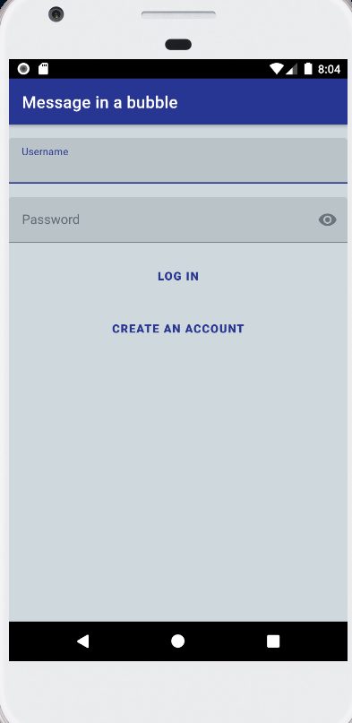
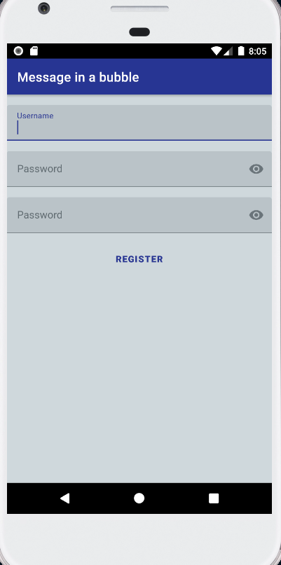
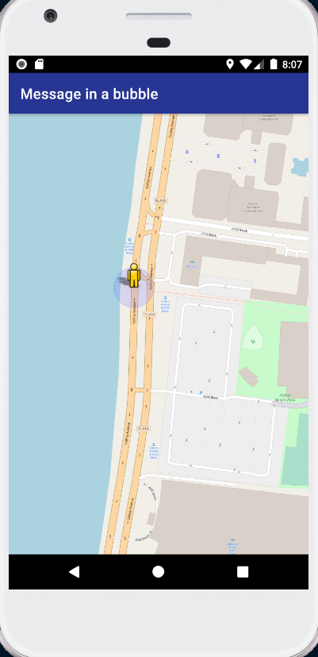
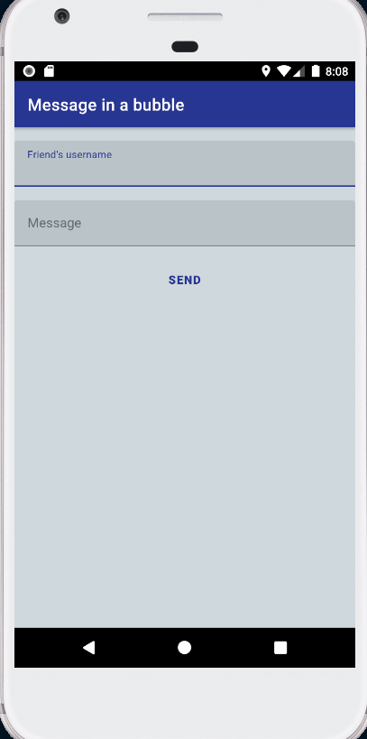
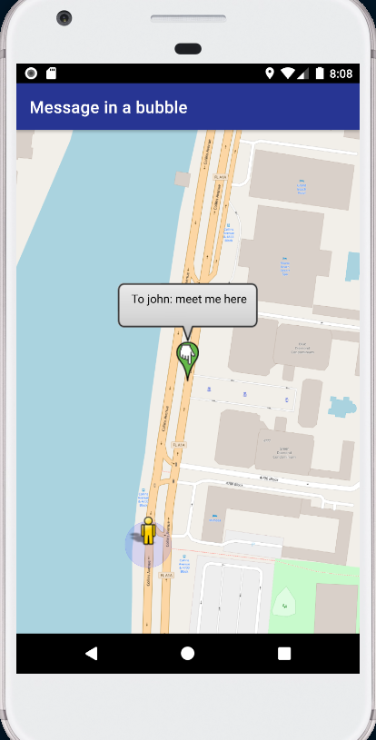

Message in a Bubble

Message in a Bubble is an android instant messaging application.
Description
In Message in a Bubble the users do not simply communicate with plain text messages but instead are using bubbles which apart from containing the message are also referring to a set of coordinates in the world map. The instant messaging protocol that Message in a Bubble uses is the Extensible Messaging and Presence Protocol (XMPP) with Smack as a client library. As for backend, you can use any XMPP server but an Openfire server is provided as a docker container connected to an external MySQL Database.
Getting Started
Prerequisites
All the dependencies of the application are listed in the
build.gradle
file inside the
app
folder.
Installation
You can use Android Studio to install/debug/modify the application.
Alternatively, you build the apk by running the following command:
cd message-in-a-bubble
./gradlew build
The apk will be located in the
message-in-a-bubble/app/build/outputs/apk
folder.
Make sure
XmppConnection.java
has the necessary information to connect to your server.
You can use whichever XMPP server you like. However, in folder
openfire
, you can find the required files to setup a dockerized Openfire server with an external
MySQL database. You will need to have installed both
Docker
and
Docker Compose
. Navigate to the
openfire
folder and start up the server by running the
docker-compose.yml
file with Docker Compose.
cd openfire
docker-compose up -d
This will create two containers:
-
mysql
: This is the Database Management System (DBMS) which the Openfire server will use to store information. The Openfire's database (openfiredb
) will be created automatically during setup with all the required tables. You can access the database usingadmin
,admin
as username and password respectively. -
openfire
: This is the Openfire server that the android application will communicate with. Initial setup and administration can be done by navigating to the addresshttp://localhost:9090
. Make sure to connect the server to the external database by usingdatabase
andopenfiredb
as HOSTNAME and DATABASENAME respectively. For more information see the documentation on the official site of Openfire.
Usage
The first time you start the application you need to grant the application permission to use your location and write access. Then you can login using your credentials or create a new account.
  Once you have logged in you can send a message by long-tapping on your desired location on the map.
 About
Status
Under development.
License
Distributed under the GPL-3.0 License. See "LICENSE" for more information.